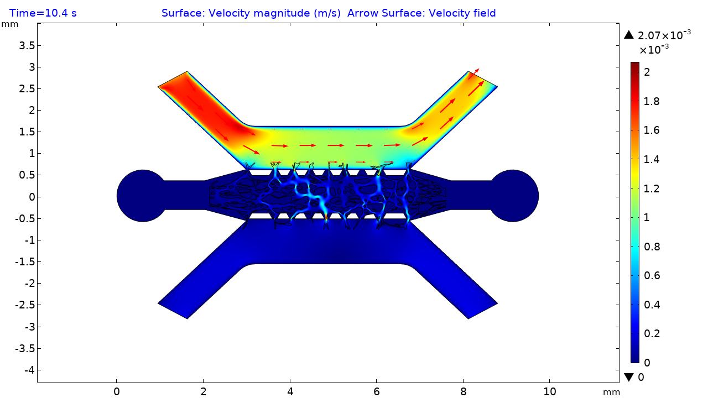

03 · Engineered tissue models & disease
Which changes in tissue mechanics and fluid transport signal altered biological function?
Published collaboration
Vascularized tumor organoids-on-a-chip
I modeled flow and solute transport in COMSOL and analyzed the vascular network in this collaborative study of tumor–vascular interactions and treatment response.
Advanced Materials, 2025 ↗Emerging direction
Connecting mechanics, transport, and function
I aim to pair mechanical and transport measurements with biological readouts in tissue models of cancer and brain aging, testing which physical changes track altered function.
COMSOL modeling of the vascularized tumor organoid platform
Solute transport
Simulated concentration evolves across the microfluidic device and vascular network.
Open video of simulated solute transport ↗
Velocity field
Velocity magnitude and flow direction in the same device.
View full-size figure of the simulated velocity field ↗Long-term goal: Evaluate physical properties as potential markers of tissue dysfunction and guide the design of reproducible disease models.